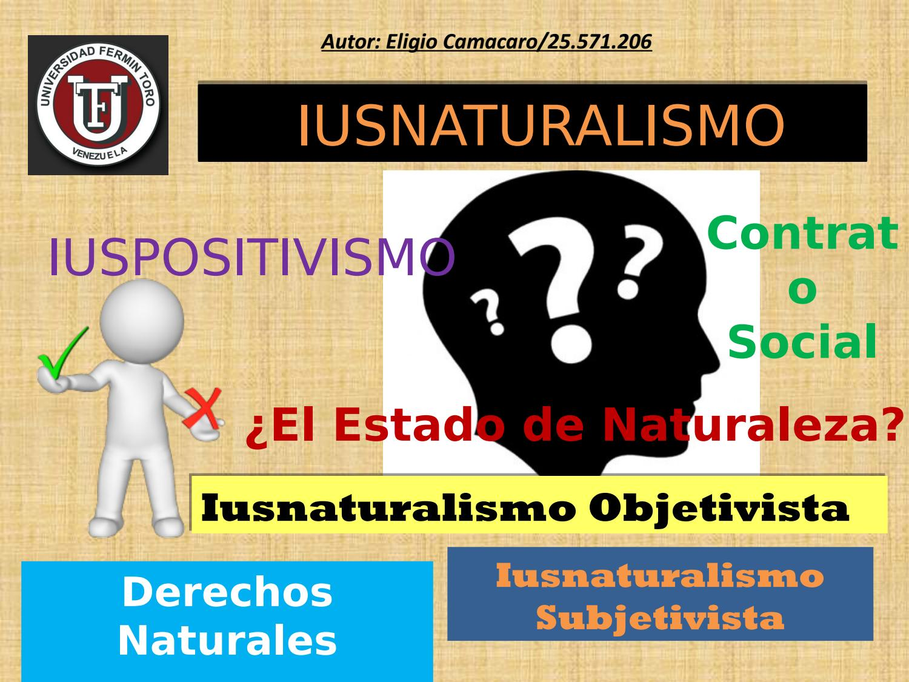

Teoría Antropológica Particularismo Histórico
El iusnaturalismo, o derecho natural, es una teoría filosófica del derecho que sostiene que existen principios de justicia y normas jurídicas inherentes a la naturaleza humana, accesibles a la razón humana. A diferencia del positivismo jurídico, que ve el derecho como un conjunto de normas creadas por las autoridades humanas, el iusnaturalismo considera que el derecho tiene una base moral objetiva y universal. Aquí exploramos los principios fundamentales del iusnaturalismo, sus principales pensadores y sus implicaciones.
Principios Fundamentales del Iusnaturalismo
1. Derecho Natural: El derecho natural se basa en la idea de que existen normas jurídicas universales y objetivas derivadas de la naturaleza humana y el orden natural. Estas normas son anteriores y superiores a las leyes humanas.
2. Accesibilidad a la Razón: Según el iusnaturalismo, los principios del derecho natural son accesibles a la razón humana. Los seres humanos, al usar su capacidad racional, pueden descubrir estas normas universales de justicia.
3. Base Moral del Derecho: El derecho natural establece que las leyes deben basarse en principios morales y éticos. Una ley injusta no se considera verdadera ley según el iusnaturalismo.
4. Universalidad: Las normas del derecho natural son aplicables a todos los seres humanos, independientemente de su cultura, religión o época histórica. Estas normas son universales y atemporales.
Implicaciones del Iusnaturalismo
1. Crítica a las Leyes Injustas: Según el iusnaturalismo, las leyes humanas deben alinearse con los principios del derecho natural. Una ley que viola estos principios se considera injusta y, por tanto, carece de legitimidad moral.
2. Derechos Humanos: La idea de derechos humanos universales está profundamente arraigada en el pensamiento iusnaturalista. Se considera que ciertos derechos fundamentales son inherentes a todos los seres humanos por su naturaleza y deben ser respetados y protegidos por todas las leyes y gobiernos.
3. Fundamento para la Desobediencia Civil: El iusnaturalismo proporciona una base moral para la desobediencia civil. Si una ley positiva es injusta según el derecho natural, los individuos tienen el derecho (y quizás el deber) de desobedecerla.
4. Legitimación de Normas Universales: El iusnaturalismo puede servir como base para la creación y legitimación de normas y principios jurídicos universales, como los consagrados en la Declaración Universal de los Derechos Humanos y otros tratados internacionales.
Críticas al Iusnaturalismo
1. Subjetividad de la Moral: Los críticos argumentan que el iusnaturalismo depende de nociones subjetivas de moralidad que pueden variar entre culturas y épocas. Lo que una sociedad considera moralmente correcto puede no serlo para otra.
2. Dificultad de Determinación: Determinar qué principios forman parte del derecho natural puede ser difícil y debatido. No siempre es claro cómo se deben interpretar y aplicar estos principios en contextos específicos.
3. Confusión entre Derecho y Moral: El iusnaturalismo tiende a confundir el derecho con la moral, lo que puede complicar la distinción entre normas legales y normas éticas.
Representación

Video
Bibliografía
- Finnis, J. (1980). Natural Law and Natural Rights. Clarendon Press.